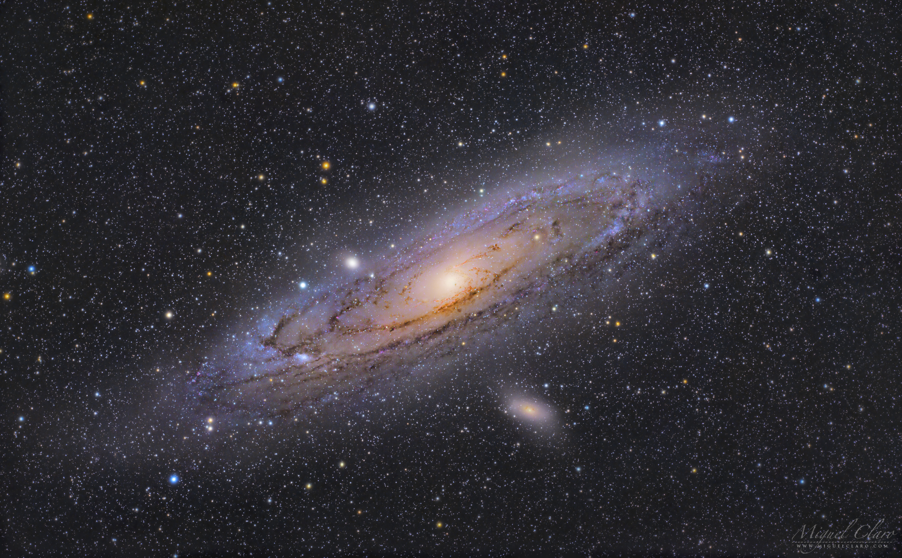
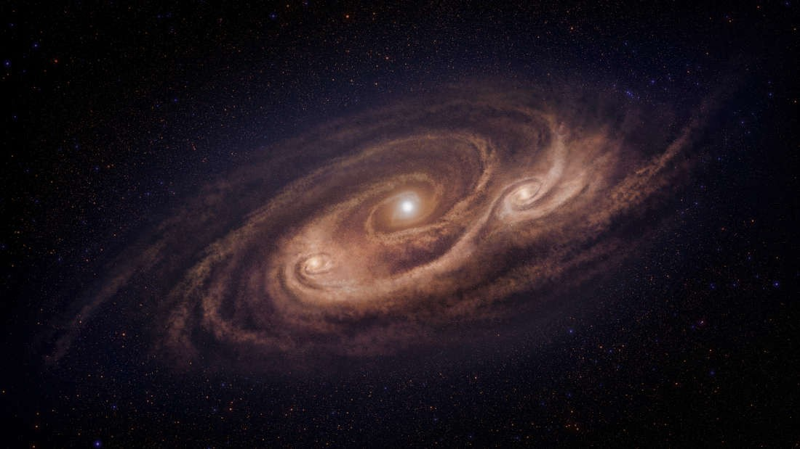

Indice
|
Via Láctea
A Via Láctea é uma galáxia espiral, da qual o Sistema Solar faz parte. Vista da Terra, aparece como uma faixa brilhante e difusa que circunda toda a esfera celeste, recortada por nuvens moleculares que lhe conferem um intrincado aspecto irregular
e recortado. Sua visibilidade é severamente comprometida pela poluição luminosa. Com poucas exceções, todos os objetos visíveis a olho nu pertencem a essa galáxia.
Sua idade estimada é de mais de treze bilhões de anos, período no qual passou por várias fases evolutivas até atingir sua forma atual. Formada por centenas de bilhões de estrelas, a galáxia possui estruturas diferenciadas entre si.
No bojo central, que possui forma alongada, há uma grande concentração de estrelas, sendo que o exato centro da galáxia abriga um buraco negro supermassivo. Ao seu redor estende-se o disco galáctico,
formado por estrelas dos mais diversos tipos, nebulosas e poeira interestelar, dentre outros. É nesta proeminente parte da Via Láctea que se manifestam os braços espirais. Ao seu redor encontram-se centenas de aglomerados globulares. Entretanto, a
dinâmica de rotação da galáxia revela que sua massa é muito maior do que a de toda a matéria observável, sendo este componente adicional denominado matéria escura, cuja natureza se desconhece.
Desde tempos imemoriais que a humanidade buscou descrever a natureza da galáxia, sendo esta referida em inúmeras lendas e mitos entre vários povos. Embora tenha sido proposto anteriormente, constatou-se que a faixa brilhante de aspecto
leitoso (a partir do qual seu nome derivou-se) se tratava na verdade de um grande conjunto de estrelas a partir das observações de Galileu Galilei utilizando um telescópio. Entretanto, nos últimos dois séculos,
a concepção científica da Via Láctea passou de uma simples nuvem de estrelas na qual o Sol situava-se próximo ao centro para uma grande galáxia espiral complexa e dinâmica, da qual nossa estrela é somente uma das bilhões existentes, o que aconteceu graças
aos avanços tecnológicos de observação, que permitiram sondar estruturas além das nuvens moleculares.
Galáxia Andrômeda
A galáxia de Andrômeda (Messier 31, NGC 224) é uma galáxia espiral localizada a cerca de 2,54 milhões de anos-luz de distância da Terra, na direção da constelação de Andrômeda.
É a galáxia espiral mais próxima da Via Láctea e seu nome é derivado da constelação onde está situada, que, por sua vez, tem seu nome derivado da princesa mitológica Andrômeda. É a
mais larga galáxia do Grupo Local, que também contém nossa galáxia, a Via Láctea, a galáxia do Triângulo e aproximadamente 30 outras menores.
O levantamento feito pelo Telescópio Espacial Spitzer em 2006 determinou que sua massa é de aproximadamente ~0.8-1.512 massas solares enquanto a Via Láctea tem uma massa estimada em
8,511 massas solares . Sua população estelar atinge aproximadamente 1 trilhão de estrelas e a Via Láctea conta com algo entre 200 a 400 bilhões de estrelas.
Além da Via Láctea, é a galáxia mais estudada. Possibilita o estudo das características de uma galáxia que também são encontradas na Via Láctea, como a estrutura espiral, aglomerados abertos e
globulares, matéria interestelar, nebulosas planetárias, remanescentes de supernova, núcleo galáctico, galáxias satélite, entre outros, mas que não podem ser estudadas devido à grande presença de poeira interestelar em nossa Galáxia.
Suas duas galáxias satélite, Messier 32 e Messier 110, são visíveis em binóculos. Messier foi o primeiro a criar um esboço contendo as três galáxias e estas, além de outras oito galáxias anãs, formam um pequeno e o mais brilhante aglomerado
de galáxias do Grupo Local, um grupo de 54 galáxias gravitacionalmente ligadas e independentemente do restante do Universo, ao qual pertence a Via Láctea.

Foto da Galáxia Andrômeda
Colisão entre Galáxias
Estudiosos e cientistas conseguiram prever, através de uma série de cálculos, que a nossa Via Láctea e Andrômeda estão se aproximando e colidirão. Teoricamente, o encontro aconteceria em cerca de 4
bilhões de anos: nesta época, provavelmente, a vida na Terra nem exista mais da forma como a conhecemos.
Os danos que tal colisão causaria são mínimos, e isso se deve ao fato dos espaços entre os astros serem muito grandes, reduzindo drasticamente a chance de colisões, o que também explica o fato de o
sistema solar raramente entrar em contato com algum outro corpo celeste ao passar pelas nuvens mais densas da Via Láctea.

Foto da colisão de duas Galáxias
Anexos
Pela primeira vez, astrônomos puderam observar com detalhes uma galáxia starburst, nome dado à formação que gera várias estrelas de modo rápido, provavelmente por consequência de uma colisão com outra galáxia. Trata-se de COSMOS-AzTEC-1,
localizada a 12,4 bilhões de anos-luz da Terra.
De acordo com artigo publicado na revista Nature, a COSMOS possui todos componentes certos para formar estrelas em uma taxa incrivelmente alta e intensa. Também foi identificado que a galáxia possui gás no seu centro e em várias nuvens.
"Descobrimos que há duas grandes nuvens distintas a milhares de anos-luz de distância do centro", disse em comunicado Ken-Ichi Tadaki, do Observatório Astronômico Nacional do Japão. “Na maioria das galáxias starburst distantes, as estrelas são formadas no centro. Por isso, é surpreendente encontrar nuvens descentralizadas."
As observações foram possíveis graças ao poder de resolução do Atacama Large Millimeter Array (ALMA), rádio-observatório de 66 antenas que fica no Chile. Usando o ALMA, pesquisadores conseguiram entender que as nuvens não são estáveis.

Foto da Galáxia formadora de estrelas

Foto da Via Láctea vista da Terra
|